<!DOCTYPE html><html lang="ko"><head><meta charset="utf-8"><meta name="viewport" content="width=device-width,initial-scale=1">
<title>4회차 · 데이터 분석과 인터랙티브 데이터 시각화</title>
<link rel="stylesheet" href="style.css?v=8">
</head><body>

<div class="lhead" id="lhead"></div>
<div class="bnav" id="bnav"></div>
<div id="blocks"></div>
<div id="timer"></div>

<footer><div class="wrap-n">
  2026-2 온라인 공동교육과정 · 인공지능 융합프로젝트 — 대전대신고등학교 하진수<br>
  교과서 Ⅱ. 융합 프로젝트를 위한 기술 <b>56~74쪽</b> ·
  <a href="index.html" style="color:var(--accent)">운영실 메인</a> ·
  <a href="lesson03.html" style="color:var(--accent)">← 이전 회차</a> ·
  <button class="tbtn ghost" style="margin-left:6px" onclick="resetLesson()">이 회차 기록 초기화</button>
</div></footer>

<script>
const LESSON={
n:4,date:"2026.09.21",dow:"월",time:"17:00~21:00",ch:"13~16차시",mode:"원격 수업",
title:"데이터 분석과 인터랙티브 데이터 시각화",
goals:[
 "데이터 분석을 통해 데이터의 특징을 파악할 수 있다.",
 "인터랙티브 데이터 시각화를 통해 데이터를 탐색하고 의미를 해석할 수 있다.",
 "인터랙티브 데이터 시각화를 활용해 원하는 정보를 효과적으로 표현할 수 있다."],
breaks:[{after:3,mins:10},{after:4,mins:10}],
blocks:[

/* ============ 0. 도입 ============ */
{kind:"open",nav:"도입",mins:10,title:"산불은 봄에 나는가",
 sub:"Ⅱ단원의 시작입니다. 오늘부터는 직접 데이터를 만지고, AI에게 제대로 시키는 법을 배웁니다.",
 sections:[
 {n:"01",h:"오늘의 질문",
  html:`<div class="hook"><div class="hk">Hook</div>
   <div class="hq">&ldquo;산불은 봄에 많이 난다&rdquo;<br>— 정말입니까? <em style="color:var(--accent);font-style:normal">몇 %인지</em> 말할 수 있습니까?</div>
   <p>누구나 아는 이야기지만, <b>숫자로 답할 수 있는 사람은 드뭅니다.</b>
   오늘은 국가통계포털에서 <b>2006~2024년 산불 데이터</b>를 직접 내려받아, 계절과 원인을 숫자로 확인하고 그래프로 만듭니다.
   그리고 그 과정 전체를 <b>생성형 AI에게 시키는 법</b>을 배웁니다.</p></div>
   <div class="ask"><div class="ah">발문 · 채팅창에 숫자로</div>
   <ol>
    <li>1년 중 산불이 가장 많이 나는 <b>달</b>은 몇 월일까요? 그렇게 생각한 근거는?</li>
    <li>산불의 가장 큰 원인은 무엇일까요? 그것이 전체의 몇 %쯤 될까요?</li>
   </ol>
   <span style="color:var(--dim);font-size:12.5px">지금 적어 둔 답은 수업이 끝날 때 실제 데이터와 맞춰 봅니다.</span></div>`},
 {n:"02",h:"출결과 준비 확인",
  html:`<div class="box"><b>확인해 주세요</b>
   <ul>
    <li>카메라를 켜고 이름을 <b>학교명_이름</b> 형식으로 바꿔 주세요.</li>
    <li>교과서 <b>56~74쪽</b>을 펴 두세요. 오늘부터 <b>Ⅱ단원 융합 프로젝트를 위한 기술</b>입니다.</li>
    <li><b>구글 계정</b>으로 코랩(colab.research.google.com)에 접속할 수 있는지 미리 확인해 주세요.</li>
    <li>생성형 AI(ChatGPT · Gemini 등)를 열어 두세요. 오늘은 <b>AI에게 제대로 시키는 법</b>이 수업의 절반입니다.</li>
   </ul>
   <div class="mini"><span>출결 1차 · 지금</span><span>2차 · 강의 종료 시</span><span>3차 · 토의 종료 시</span></div></div>`},
 {n:"03",h:"교과서가 던지는 질문",
  lead:"교과서 56쪽 &lsquo;이번 시간 과제&rsquo;입니다.",
  html:`<div class="box warn"><b class="t">이번 시간 과제</b>
   데이터 분석과 데이터 시각화는 문제 상황을 이해하고 효율적인 해결 방법을 도출하는 데 도움이 된다.
   데이터 분석을 통해 문제의 현재 상태나 문제 해결에 필요한 데이터에 관한 이해를 높일 수 있으며,
   시각화된 데이터를 활용해 데이터의 경향을 직관적으로 파악하고 서로 다른 데이터 사이의 관계를 효과적으로 분석할 수 있다.
   <br><br>이번 시간에는 최근 전국 곳곳에서 발생하는 <b>대형 산불과 관련한 요인, 발생 건수 등에 관한 데이터를 분석</b>하고
   이를 활용한 <b>인터랙티브 데이터 시각화 자료</b>를 만들어 본다.</div>
   <div class="box tip"><b>왜 산불인가</b> · 해마다 길어지는 폭염과 열대야, 건조한 대기와 이상 기후로 발생하는 기온 상승으로 인한 대형 산불은
   우리의 일상과 사회에 큰 영향을 미치고 있습니다. 이런 현상을 <b>객관적으로 파악하려면 실제 데이터에 기반한 분석</b>이 필요합니다.</div>`,
  pages:[{p:56,t:"1. 데이터 분석과 인터랙티브 데이터 시각화 · 학습 목표 · 이번 시간 과제"}]},
 {n:"04",h:"오늘의 흐름",
  html:`<div class="tw"><table style="min-width:600px">
   <thead><tr><th style="width:80px">시간</th><th style="width:80px">교과서</th><th>하는 일</th></tr></thead>
   <tbody>
    <tr><td><b>강의 ①</b></td><td>57~59쪽</td><td>데이터 분석이란 무엇인가 · <b>국가통계포털에서 산불 데이터 직접 내려받기</b></td></tr>
    <tr><td><b>강의 ②</b></td><td>60~61쪽</td><td><b>프롬프트 엔지니어링</b> — 5가지 기본 원칙과 4가지 고급 기법</td></tr>
    <tr><td><b>강의 ③</b></td><td>62~69쪽</td><td>전처리 → 분석 → 시각화. AI에게 시켜서 그래프까지</td></tr>
    <tr><td><b>과제</b></td><td>70~74쪽</td><td><b>인터랙티브 데이터 시각화</b> · 수면 시간 데이터 분석 계획 세우기</td></tr>
   </tbody></table></div>
   <div class="box tip"><b>오늘의 한 문장</b> · <b>질문을 어떻게 설계하느냐에 따라 결과가 달라진다.</b>
   오늘 배우는 프롬프트 엔지니어링은 남은 8회차 내내 씁니다.</div>`}]},

/* ============ 1. 강의 ① ============ */
{kind:"lecture",nav:"강의 ①",mins:30,title:"데이터 분석과 데이터 구하기",
 sub:"13차시 — 분석은 데이터를 구하는 데서 시작합니다. 교과서 57~59쪽.",
 sections:[
 {n:"01",h:"데이터 분석이란",
  lead:"데이터 분석은 다양한 데이터에서 <b>의미를 발견</b>하고, 이를 바탕으로 현상을 이해하는 과정입니다.",
  html:`<p>일상에서 우리는 문제 상황을 이해하거나 합리적인 의사 결정을 내릴 때 객관적인 데이터를 참고합니다.
   그러나 <b>데이터를 단순히 수집하는 것만으로는 충분하지 않습니다.</b>
   체계적으로 분석해야만 그 속에 숨겨진 패턴을 발견하고, 문제를 더 객관적으로 이해하고 정확한 판단을 내릴 수 있습니다.</p>
   <figure class="fig">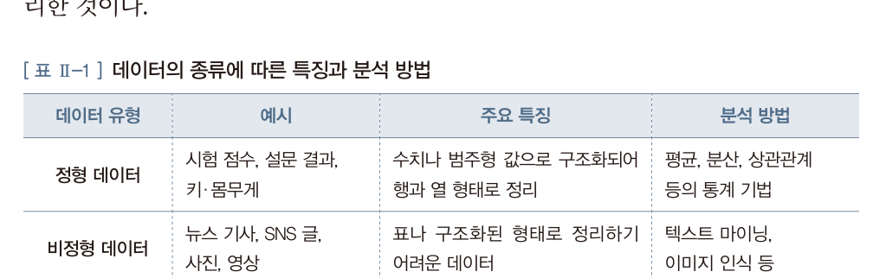
    <figcaption><b>교과서 57쪽 · 표 Ⅱ-1</b> 데이터의 종류에 따른 특징과 분석 방법</figcaption></figure>
   <div class="grid g2">
    <div class="card"><h4>정형 데이터</h4><p>시험 점수, 설문 결과, 키·몸무게처럼 <b>수치나 범주형 값으로 구조화되어 행과 열 형태로 정리</b>된 데이터.
     평균·분산·상관관계 등 <b>통계 기법</b>으로 분석합니다.</p></div>
    <div class="card"><h4>비정형 데이터</h4><p>뉴스 기사, SNS 글, 사진, 영상처럼 <b>표나 구조화된 형태로 정리하기 어려운</b> 데이터.
     <b class="term">텍스트 마이닝</b>이나 <b class="term">이미지 인식</b>으로 분석합니다.</p></div>
   </div>
   <div class="box"><b>텍스트 마이닝</b> · 마이닝(mining)은 땅이나 바다에서 가치 있는 물질을 캐내는 것을 의미합니다.
   즉 텍스트 마이닝은 <b>구조화되지 않은 텍스트에서 유의미한 정보와 패턴을 추출</b>하는 것입니다.</div>
   <div class="ask"><div class="ah">발문</div>
   여러분이 <b>2회차에 해부한 서비스</b>가 모으는 데이터는 정형인가요, 비정형인가요? 둘 다라면 각각 무엇인가요?</div>`,
  pages:[{p:57,t:"1 데이터 분석 · 표 Ⅱ-1"}]},
 {n:"02",h:"데이터 구하기 — 국가통계포털에서 산불 데이터 내려받기",
  lead:"교과서 58~59쪽. 실제 데이터를 손에 넣는 것부터가 분석입니다.",
  html:`<div class="doit"><div class="dh">직접 내려받기 <span class="m">10분 · 함께</span></div>
   <p>화면을 공유해 함께 진행합니다. 아래 순서대로 따라오세요.</p>
   <ol>
    <li>국가통계포털(KOSIS) 접속 → <b>산불</b> 검색</li>
    <li>「월별·원인별 산불발생 건수」 통계표 선택</li>
    <li><b>조회 설정</b>에서 시점 범위 지정 (2006~2024)</li>
    <li><b>월별 속성의 &lsquo;합계&rsquo;, 원인별 속성의 &lsquo;계&rsquo; 선택 해제</b> ← 가장 중요</li>
    <li>다운로드 → 파일 형태 <b>EXCEL(xlsx)</b>, 시점 정렬 <b>오름차순</b>, 소수점 <b>조회 화면과 동일</b></li>
   </ol></div>
   <div class="box warn"><b class="t">왜 합계를 반드시 빼야 하나 (교과서 59쪽 Q&amp;A)</b>
   합계가 포함된 상태로 분석하면 결과가 <b>왜곡</b>됩니다.
   예를 들어 산불 발생 원인 중 건수가 가장 많은 항목을 찾을 때, 합계를 나타내는 &lsquo;계&rsquo;는 여러 원인의 값을 모두 더한 값이므로 <b>가장 큰 수치</b>를 가지게 됩니다.
   이로 인해 &lsquo;계&rsquo;가 실제 산불 발생 원인 중 하나인 것처럼 <b>잘못 해석</b>될 수 있습니다.
   <br><br>따라서 정확한 분석을 위해서는 분석 대상이 아닌 <b>합계에 해당하는 속성을 미리 제거</b>하는 것이 바람직합니다.</div>
   <div class="ask"><div class="ah">발문</div>
   만약 합계를 빼지 않고 &ldquo;가장 큰 산불 원인은?&rdquo;을 AI에게 물었다면, AI는 뭐라고 답했을까요?
   <b>AI가 틀린 게 아니라 데이터가 틀린 것</b>입니다. 이런 오류를 뭐라고 불러야 할까요?</div>
   <div class="reslist">
    <a class="res" href="https://kosis.kr" target="_blank" rel="noreferrer">
     <div class="rk">데이터 출처 · 통계청</div><div class="rt">국가통계포털 KOSIS</div>
     <div class="rd">오늘 쓸 산불 데이터를 여기서 내려받습니다. 여러분 프로젝트 데이터도 여기 있을 가능성이 큽니다.</div>
     <div class="ru">kosis.kr</div></a>
    <a class="res" href="https://www.data.go.kr" target="_blank" rel="noreferrer">
     <div class="rk">데이터 출처 · 행정안전부</div><div class="rt">공공데이터포털</div>
     <div class="rd">2회차에 소개한 곳. 통계표보다 원자료(raw data)가 많습니다.</div>
     <div class="ru">www.data.go.kr</div></a>
   </div>`,
  pages:[{p:58,t:"데이터 수집 — 국가통계포털 조회 설정"},{p:59,t:"불필요한 항목 제외 · 데이터 다운로드"}]}],
 quiz:[
 {q:"다음 중 <b>정형 데이터</b>에 해당하는 것은?",
  opts:["뉴스 기사 본문","SNS에 올린 사진","설문 조사 결과표","유튜브 영상"],
  a:2,why:"정형 데이터는 수치나 범주형 값으로 <b>구조화되어 행과 열 형태로 정리</b>된 데이터입니다. 나머지는 비정형 데이터로 텍스트 마이닝이나 이미지 인식으로 분석합니다. 교과서 57쪽 표 Ⅱ-1."},
 {q:"구조화되지 않은 텍스트에서 유의미한 정보와 패턴을 추출하는 것을 무엇이라 하는가?",
  opts:["텍스트 마이닝","이미지 인식","데이터 시각화","결측치 처리"],
  a:0,why:"마이닝(mining)은 캐낸다는 뜻입니다. 텍스트에서 가치 있는 정보를 캐내는 것이 <b>텍스트 마이닝</b>입니다. 교과서 57쪽."},
 {q:"산불 데이터를 내려받을 때 월별 &lsquo;합계&rsquo;와 원인별 &lsquo;계&rsquo;를 반드시 제거해야 하는 이유는?",
  opts:["파일 용량이 커지기 때문","합계가 개별 원인보다 항상 커서 실제 원인 중 하나인 것처럼 잘못 해석될 수 있기 때문","엑셀에서 열리지 않기 때문","AI가 한글을 읽지 못하기 때문"],
  a:1,why:"&lsquo;계&rsquo;는 여러 원인의 값을 모두 더한 값이므로 가장 큰 수치를 가집니다. 이를 빼지 않으면 <b>합계가 1위 원인처럼 보이는</b> 왜곡이 생깁니다. 교과서 59쪽 Q&amp;A."}]},

/* ============ 2. 강의 ② ============ */
{kind:"lecture",nav:"강의 ②",mins:30,title:"프롬프트 엔지니어링 — 데이터 분석의 새로운 파트너",
 sub:"14차시 — 같은 데이터, 같은 AI. 그런데 질문이 다르면 결과가 다릅니다. 교과서 60~61쪽.",
 sections:[
 {n:"00",h:"먼저 겨뤄 보기 — 어느 쪽이 좋은 프롬프트인가",
  html:`<div class="hook"><div class="hk">Challenge</div>
   <div class="hq">둘 다 같은 것을 시키는 말입니다.<br>그런데 결과는 완전히 다릅니다.</div>
   <p>아래 다섯 쌍 중 <b>더 좋은 프롬프트</b>를 골라 보세요. 다 맞히면 여러분은 이미 프롬프트 엔지니어링의 기본을 알고 있는 것입니다.</p></div>
   <div class="netq" id="pq"></div>`},
 {n:"01",h:"프롬프트란 무엇인가",
  html:`<p>데이터 분석의 모든 과정에서 <b>생성형 인공지능</b>(ChatGPT, Gemini 등 대형언어모델)이라는 강력한 협력 도구를 활용할 수 있습니다.
   이러한 인공지능에게 작업을 지시하는 설계도이자 명령어가 바로 <b class="term">프롬프트(prompt)</b>입니다.</p>
   <div class="box" style="border-left:2px solid var(--accent)">프롬프트는 단순히 질문을 입력하는 것을 넘어,
   <b>원하는 결과물을 정확히 얻기 위해 지시를 체계적으로 설계하고 개선하는 과정</b>을 포함합니다. 이를 <b>프롬프트 엔지니어링</b>이라고 합니다.</div>
   <figure class="fig">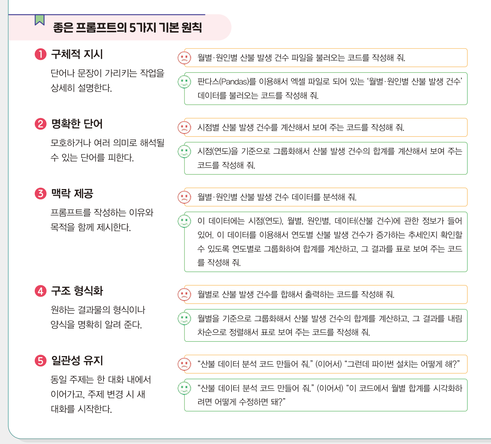
    <figcaption><b>교과서 60쪽</b> 좋은 프롬프트의 5가지 기본 원칙 — 나쁜 예(빨강)와 좋은 예(초록) 비교</figcaption></figure>
   <div class="tw"><table style="min-width:560px">
    <thead><tr><th style="width:120px">원칙</th><th style="width:200px">무엇을 하라는 것인가</th><th>한 줄 요약</th></tr></thead>
    <tbody>
     <tr><td><b>① 구체적 지시</b></td><td>단어나 문장이 가리키는 작업을 상세히 설명한다</td><td>&ldquo;불러와&rdquo; → &ldquo;<b>판다스로 엑셀 파일</b>을 불러와&rdquo;</td></tr>
     <tr><td><b>② 명확한 단어</b></td><td>모호하거나 여러 의미로 해석될 수 있는 단어를 피한다</td><td>&ldquo;시점별&rdquo; → &ldquo;<b>시점(연도)을 기준으로</b>&rdquo;</td></tr>
     <tr><td><b>③ 맥락 제공</b></td><td>프롬프트를 작성하는 이유와 목적을 함께 제시한다</td><td>데이터에 <b>어떤 열이 있는지</b>, <b>무엇을 확인하려는지</b>까지</td></tr>
     <tr><td><b>④ 구조 형식화</b></td><td>원하는 결과물의 형식이나 양식을 명확히 알려 준다</td><td>&ldquo;출력해&rdquo; → &ldquo;<b>내림차순 정렬해서 표로</b>&rdquo;</td></tr>
     <tr><td><b>⑤ 일관성 유지</b></td><td>동일 주제는 한 대화 내에서 이어가고, 주제 변경 시 새 대화를 시작한다</td><td>산불 이야기 중에 <b>파이썬 설치</b>를 묻지 않는다</td></tr>
    </tbody></table></div>`,
  pages:[{p:60,t:"프롬프트 엔지니어링 · 좋은 프롬프트의 5가지 기본 원칙"}]},
 {n:"02",h:"고급 활용 기법 네 가지",
  lead:"기본 원칙을 지켜도 결과물이 만족스럽지 못할 때가 있습니다. 그때 쓰는 기법입니다. 교과서 61쪽.",
  html:`<figure class="fig">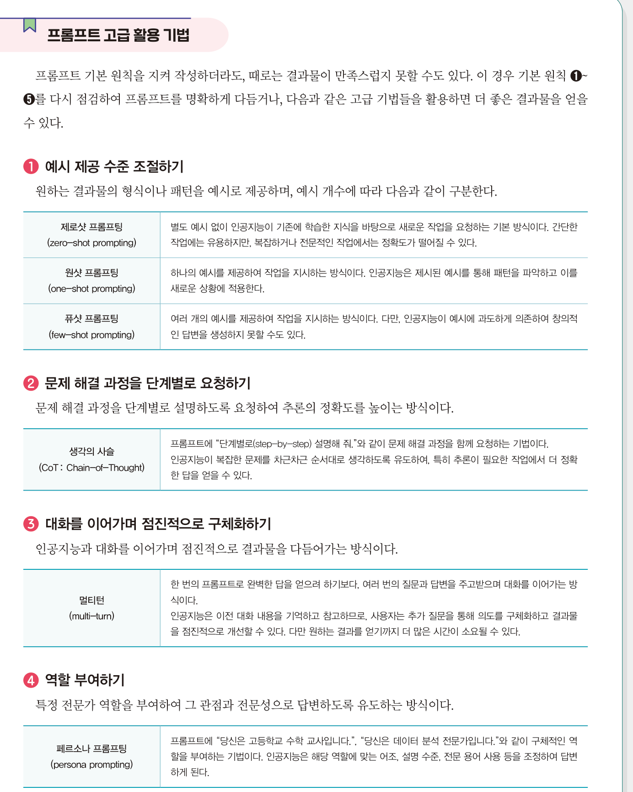
   <figcaption><b>교과서 61쪽</b> 프롬프트 고급 활용 기법 — 예시 제공 / 단계별 요청 / 점진적 구체화 / 역할 부여</figcaption></figure>
   <div class="grid g2">
    <div class="card"><h4>① 예시 제공 수준 조절하기</h4>
     <p><b>제로샷</b>(zero-shot) — 예시 없이 요청. 간단한 작업에 유용하나 복잡하거나 전문적인 작업에서는 정확도가 떨어질 수 있음<br>
     <b>원샷</b>(one-shot) — 예시 하나를 제공. AI가 패턴을 파악해 새 상황에 적용<br>
     <b>퓨샷</b>(few-shot) — 여러 예시를 제공. 다만 예시에 과도하게 의존해 창의적 답변을 못 낼 수도 있음</p></div>
    <div class="card"><h4>② 문제 해결 과정을 단계별로 요청하기</h4>
     <p><b>생각의 사슬</b>(CoT: Chain-of-Thought) — 프롬프트에 &ldquo;<b>단계별로(step-by-step) 설명해 줘</b>&rdquo;와 같이 문제 해결 과정을 함께 요청하는 기법.
     AI가 복잡한 문제를 차근차근 순서대로 생각하도록 유도하여, 특히 추론이 필요한 작업에서 더 정확한 답을 얻을 수 있음</p></div>
    <div class="card"><h4>③ 대화를 이어가며 점진적으로 구체화하기</h4>
     <p><b>멀티턴</b>(multi-turn) — 한 번의 프롬프트로 완벽한 답을 얻으려 하기보다, 여러 번의 질문과 답변을 주고받으며 대화를 이어가는 방식.
     AI는 이전 대화 내용을 기억하고 참고하므로 결과물을 점진적으로 개선할 수 있음. 다만 시간이 더 소요될 수 있음</p></div>
    <div class="card"><h4>④ 역할 부여하기</h4>
     <p><b>페르소나 프롬프팅</b>(persona prompting) — &ldquo;<b>당신은 고등학교 수학 교사입니다.</b>&rdquo;, &ldquo;<b>당신은 데이터 분석 전문가입니다.</b>&rdquo;처럼 구체적인 역할을 부여하는 기법.
     AI는 해당 역할에 맞게 어조, 설명 수준, 전문 용어 사용 등을 조정하여 답변함</p></div>
   </div>
   <div class="doit"><div class="dh">직접 실험 <span class="m">8분 · 생성형 AI</span></div>
    <p>같은 질문을 <b>두 가지 방식</b>으로 던져 보고 답이 어떻게 달라지는지 비교하세요.</p>
    <div class="tw" style="margin-top:10px"><table style="min-width:520px">
     <thead><tr><th style="width:110px">비교</th><th>A로 물어보기</th><th>B로 물어보기</th></tr></thead>
     <tbody>
      <tr><td><b>역할 부여</b></td><td>인공지능이 뭐야?</td><td><b>당신은 고등학교 정보 교사입니다.</b> 고1에게 인공지능을 3문장으로 설명해 주세요.</td></tr>
      <tr><td><b>단계별 요청</b></td><td>산불이 왜 봄에 많이 나?</td><td>산불이 봄에 많이 나는 이유를 <b>단계별로</b> 설명해 줘.</td></tr>
     </tbody></table></div>
    <p style="margin-top:8px">달라진 점을 <b>한 문장</b>으로 채팅창에 올려 주세요.</p></div>
   <div class="box warn"><b class="t">이 강좌의 규칙</b>모든 과제에 <b>프롬프트 로그</b>(입력한 프롬프트 · 받은 결과 · 내가 고친 부분)를 함께 제출합니다.
   로그 없이 제출된 코드는 채점하지 않습니다. 오늘부터는 <b>어떤 원칙을 적용했는지</b>도 함께 적으면 좋습니다.</div>`,
  pages:[{p:61,t:"프롬프트 고급 활용 기법"}]}],
 quiz:[
 {q:"&ldquo;시점별 산불 발생 건수를 계산해서 보여 주는 코드를 작성해 줘&rdquo;를 &ldquo;시점(연도)을 기준으로 그룹화해서…&rdquo;로 고친 것은 어느 원칙을 적용한 것인가?",
  opts:["구체적 지시","명확한 단어","맥락 제공","일관성 유지"],
  a:1,why:"&lsquo;시점별&rsquo;은 연도인지 월인지 모호합니다. <b>모호하거나 여러 의미로 해석될 수 있는 단어를 피하는</b> 것이 ② 명확한 단어 원칙입니다. 교과서 60쪽."},
 {q:"프롬프트에 &ldquo;단계별로 설명해 줘&rdquo;를 넣어 추론의 정확도를 높이는 기법은?",
  opts:["퓨샷 프롬프팅","생각의 사슬(CoT)","멀티턴","페르소나 프롬프팅"],
  a:1,why:"<b>생각의 사슬(Chain-of-Thought)</b>입니다. AI가 복잡한 문제를 차근차근 순서대로 생각하도록 유도합니다. 교과서 61쪽."},
 {q:"&ldquo;당신은 데이터 분석 전문가입니다&rdquo;처럼 역할을 부여하는 기법은?",
  opts:["제로샷 프롬프팅","원샷 프롬프팅","멀티턴","페르소나 프롬프팅"],
  a:3,why:"<b>페르소나 프롬프팅</b>입니다. AI가 그 역할에 맞게 어조·설명 수준·전문 용어를 조정합니다. 교과서 61쪽."},
 {q:"퓨샷 프롬프팅(few-shot)의 <b>단점</b>으로 교과서가 지적한 것은?",
  opts:["예시를 만들 수 없다","예시에 과도하게 의존해 창의적인 답변을 생성하지 못할 수도 있다","대화가 길어진다","역할을 부여할 수 없다"],
  a:1,why:"여러 예시를 주면 패턴을 잘 따르지만, <b>예시에 과도하게 의존</b>하는 부작용이 있습니다. 교과서 61쪽."}]},

/* ============ 3. 강의 ③ ============ */
{kind:"lecture",nav:"강의 ③",mins:30,title:"전처리 · 분석 · 시각화 — AI와 함께",
 sub:"15차시 — 배운 프롬프트 원칙을 실제 데이터에 바로 적용합니다. 교과서 62~69쪽.",
 sections:[
 {n:"01",h:"① 데이터 전처리 — 빈칸을 어떻게 할 것인가",
  lead:"내려받은 산불 데이터는 셀 병합 때문에 일부 칸이 비어 있습니다. 판다스로 불러오면 그 칸이 <b class='term'>NaN</b>으로 표시됩니다.",
  html:`<div class="box"><b>NaN</b> · Not a Number, 숫자가 아니라는 뜻으로 <b>데이터가 누락되었음</b>을 의미합니다.
   이 값을 <b>결측치(missing value)</b>라고 하며, 그대로 두고 분석하면 계산 오류가 발생하거나 잘못된 결과를 얻을 수 있습니다.</div>
   <div class="box tip"><b>결측치 처리의 기본 방법 세 가지</b>
    <ul>
     <li><b>이전값 치환</b>(forward fill) · 결측치를 바로 위 행의 값으로 채운다</li>
     <li><b>이후값 치환</b>(backward fill) · 결측치를 아래 행의 값으로 채운다</li>
     <li><b>삭제</b>(deletion) · 결측치가 있는 행 또는 열을 제거한다</li>
    </ul></div>
   <p><b>이 데이터에서는 왜 &lsquo;이전값 치환&rsquo;인가?</b> 결측치를 처리할 때 해당 행 전체를 삭제하면 분석에 사용할 데이터가 줄어들어 신뢰성이 떨어집니다.
   이 데이터에서 &lsquo;시점&rsquo;과 &lsquo;월별&rsquo; 열의 결측치는 <b>원본 엑셀의 셀 병합 구조에서 발생한 것</b>으로, 바로 위 행의 값과 동일해야 합니다.
   따라서 <b>이전값 치환</b>이 적합합니다.</p>
   <figure class="fig">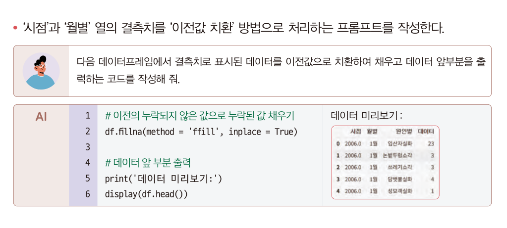
    <figcaption><b>교과서 63쪽</b> 결측치를 이전값으로 치환하는 프롬프트와 AI가 생성한 코드</figcaption></figure>`,
  code:[{name:"전처리 — 결측치 치환과 자료형 변환",src:`# 이전의 누락되지 않은 값으로 누락된 값 채우기
df.fillna(method = 'ffill', inplace = True)

# 데이터 앞 부분 출력
print('데이터 미리보기:')
display(df.head())

# '시점'을 정수형으로 변환
df['시점'] = df['시점'].astype(int)

# 전체 열 정보 출력
print('데이터 전체 정보:')
display(df.info())`}],
  after:`<div class="ask"><div class="ah">발문</div>
   <b>시험 성적 데이터</b>에 결측치가 있다면 &lsquo;이전값 치환&rsquo;을 써도 될까요? 왜 산불 데이터에서는 되는데 성적에서는 안 될까요?
   <span style="color:var(--dim)">결측치 처리 방법은 데이터의 성격에 따라 달라집니다. 이것이 3회차에서 배운 &lsquo;선택한 근거를 설명하기&rsquo;입니다.</span></div>`,
  pages:[{p:62,t:"데이터 불러오기"},{p:63,t:"(2) 데이터 전처리하기 — 결측치와 자료형"}]},
 {n:"02",h:"② 데이터 분석 — 숫자로 답하기",
  lead:"이제 도입에서 적어 둔 예상과 실제 데이터를 맞춰 봅니다.",
  html:`<div class="code"><div class="ch"><span>분석 — 원인별 합계 구하기</span></div><pre># '원인별'을 기준으로 데이터를 그룹화한 후, 각 원인별로 '데이터'의 합계를 계산하고
# 산불 발생 건수가 많은 순서대로 내림차순 정렬
원인별_산불_건수 = df.groupby('원인별')['데이터'].sum().sort_values(ascending = False)

# 결과 출력
print('원인별 산불 발생 건수 합계 (내림차순):')
display(원인별_산불_건수)</pre></div>
   <div class="box"><b>sort_values( )</b> · 데이터를 값을 기준으로 정렬합니다.
   <span style="font-family:var(--mono)">ascending = False</span>는 내림차순, <span style="font-family:var(--mono)">ascending = True</span>는 오름차순입니다.</div>
   <figure class="fig">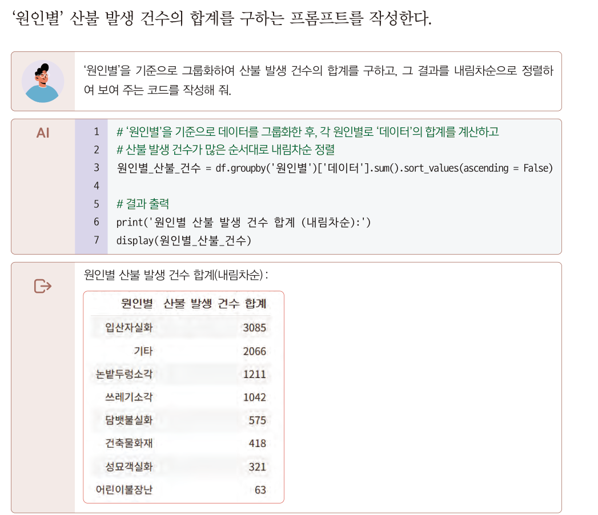
    <figcaption><b>교과서 65쪽</b> 원인별 산불 발생 건수 합계 (내림차순) — 도입에서 예상한 답과 맞춰 보세요</figcaption></figure>
   <div class="ask"><div class="ah">발문 · 도입의 답 맞추기</div>
   1위가 <b>입산자실화</b>였습니다. 예상하셨나요? 2위인 <b>기타</b>가 2,066건이나 되는 것은 무엇을 뜻할까요?
   <span style="color:var(--dim)">&lsquo;기타&rsquo;가 2위라는 것은 산불 원인 분류 체계 자체에 개선할 점이 있다는 신호일 수 있습니다.</span></div>
   <figure class="fig">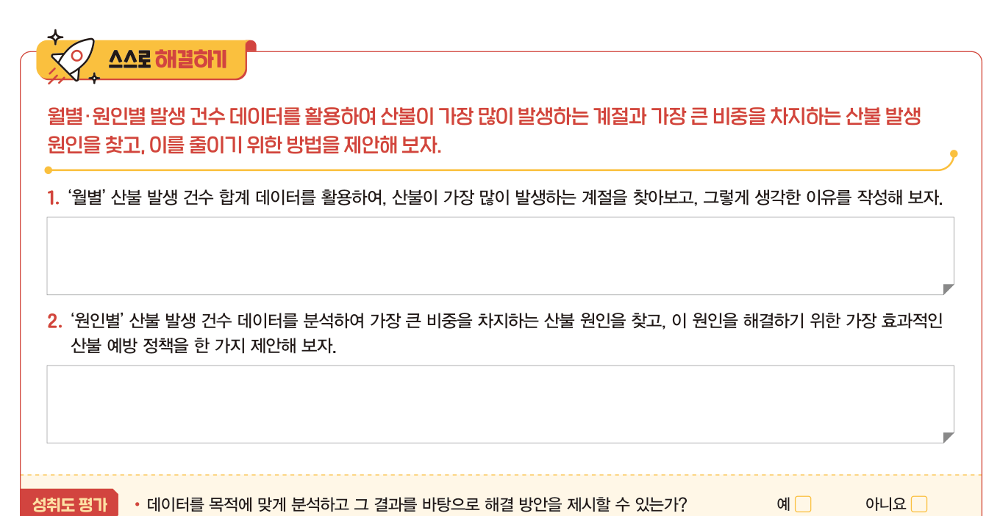
    <figcaption><b>교과서 65쪽</b> 스스로 해결하기 — 계절과 원인을 찾고 줄이기 위한 방법 제안하기</figcaption></figure>`,
  pages:[{p:64,t:"(3) 데이터 분석하기"},{p:65,t:"주요 원인 파악 · 스스로 해결하기"}]},
 {n:"03",h:"③ 데이터 시각화 — 목적에 맞는 그래프 고르기",
  lead:"같은 데이터라도 <b>무엇을 보여 주고 싶은가</b>에 따라 그래프가 달라집니다.",
  html:`<div class="tw"><table style="min-width:600px">
   <thead><tr><th style="width:130px">그래프</th><th style="width:190px">언제 쓰나</th><th>산불 데이터에서는</th></tr></thead>
   <tbody>
    <tr><td><b>막대그래프 + 추세선</b></td><td>시간에 따른 <b>변화와 경향</b></td><td>연도별 산불 발생 건수가 늘고 있는가?</td></tr>
    <tr><td><b>파이 차트</b></td><td>전체에서 각 항목이 차지하는 <b>비율</b></td><td>어느 원인이 몇 %를 차지하는가?</td></tr>
    <tr><td><b>누적 세로 막대</b></td><td>전체와 <b>내부 구성</b>을 동시에</td><td>월별 전체 건수와 그 안의 원인별 비중</td></tr>
    <tr><td><b>히트맵</b></td><td>두 기준의 <b>교차 패턴</b></td><td>건수가 적은 달의 패턴도 색으로 확인</td></tr>
   </tbody></table></div>
   <figure class="fig">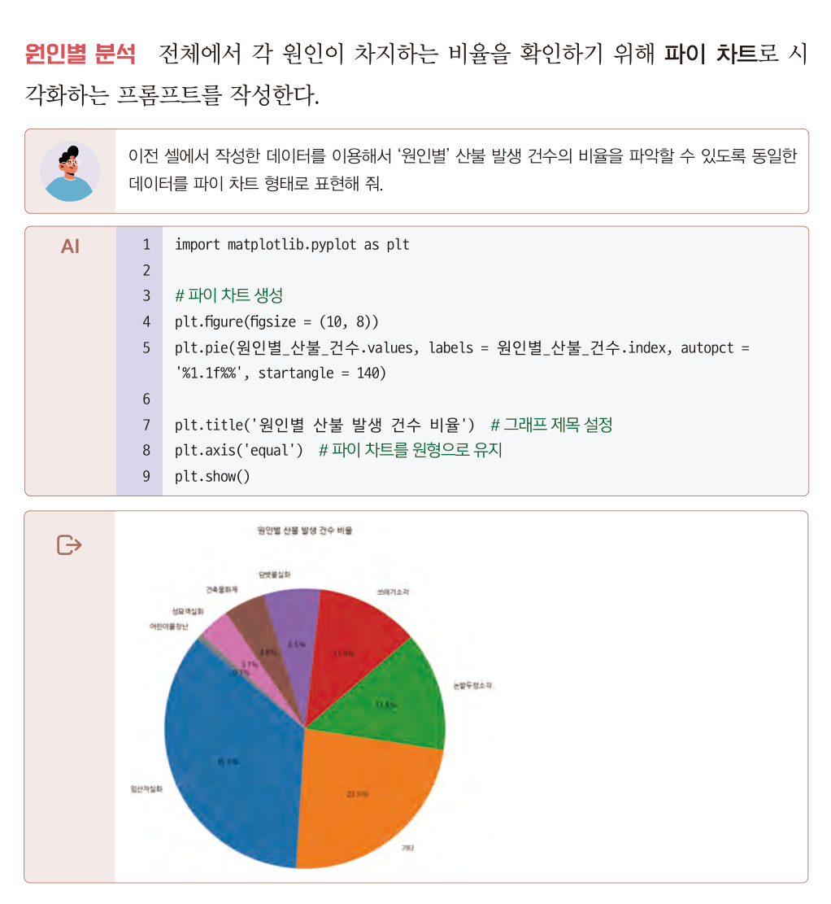
    <figcaption><b>교과서 68쪽</b> 원인별 산불 발생 건수 비율 — 파이 차트</figcaption></figure>
   <figure class="fig">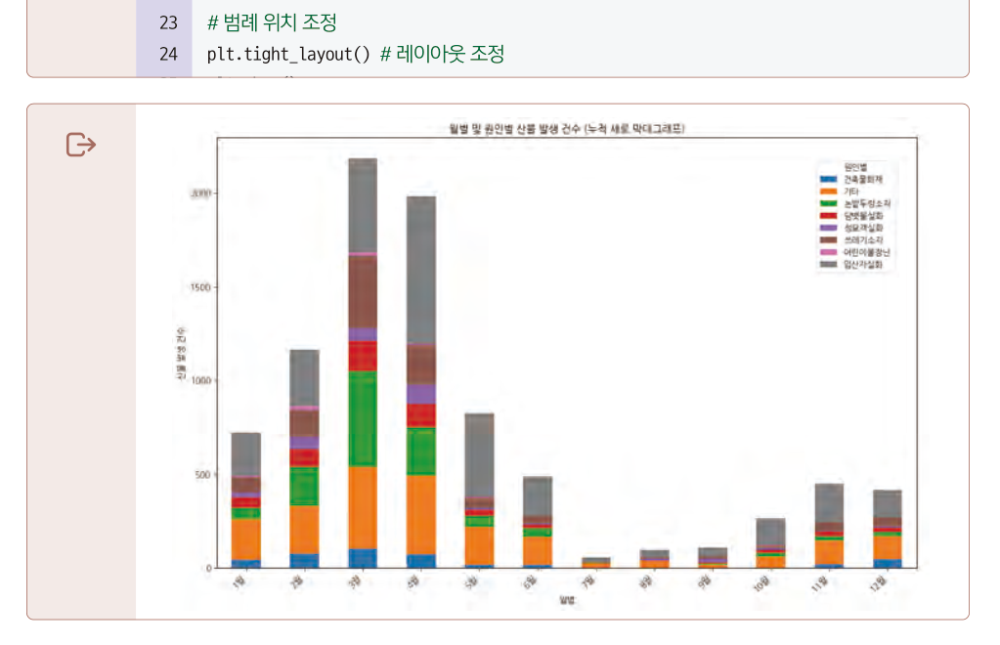
    <figcaption><b>교과서 69쪽</b> 월별 및 원인별 산불 발생 건수 — 누적 세로 막대 그래프</figcaption></figure>
   <div class="box"><b>피벗 테이블</b> · 많은 데이터를 특정 기준(행, 열)에 따라 분류하고 요약하여 보여 주는 표입니다.
   월별로 원인별 비중을 비교하려면 먼저 이 표를 만들어야 합니다. 코드에서는 <span style="font-family:var(--mono)">groupby( ).sum().unstack(fill_value = 0)</span>이 그 역할을 합니다.</div>
   <div class="doit"><div class="dh">해 보기 <span class="m">교과서 69쪽 스스로 해결하기</span></div>
    <p>왼쪽 그래프에서 3월과 7월의 산불 발생 건수 차이가 커서 <b>7월의 원인별 패턴을 파악하기 어렵습니다.</b>
    <b>히트맵 시각화</b> 프롬프트를 작성하여 월별·원인별 산불 발생 패턴을 비교해 보세요.
    <br><span style="color:var(--dim)">Tip · 히트맵을 사용하면 7월, 8월처럼 산불 발생 건수가 적은 달의 데이터도 명확히 확인할 수 있고, 각 월별로 주요 발생 요인을 쉽게 파악할 수 있습니다.</span></p></div>`,
  pages:[{p:66,t:"(4) 데이터 시각화하기 — 연도별 분석"},{p:68,t:"원인별 분석 — 파이 차트"},{p:69,t:"월별/원인별 상세 분석 — 누적 세로 막대"}]}],
 quiz:[
 {q:"결측치(NaN)를 <b>바로 위 행의 값</b>으로 채우는 처리 방법은?",
  opts:["이전값 치환(forward fill)","이후값 치환(backward fill)","삭제(deletion)","특정값 치환"],
  a:0,why:"<b>이전값 치환(forward fill)</b>입니다. 산불 데이터의 &lsquo;시점&rsquo;·&lsquo;월별&rsquo; 결측치는 엑셀 셀 병합에서 생긴 것이라 위 행과 같아야 하므로 이 방법이 적합합니다. 교과서 63쪽."},
 {q:"결측치가 있는 행 <b>전체를 삭제</b>할 때 생기는 가장 큰 문제는?",
  opts:["파일 용량이 커진다","분석에 사용할 데이터가 줄어들어 신뢰성이 떨어진다","그래프를 그릴 수 없다","자료형이 바뀐다"],
  a:1,why:"삭제는 가장 간단하지만 <b>데이터가 줄어들어 분석의 신뢰성을 떨어뜨릴 수</b> 있습니다. 교과서 63쪽."},
 {q:"전체에서 각 항목이 차지하는 <b>비율</b>을 보여 주기에 가장 적합한 그래프는?",
  opts:["선 그래프","파이 차트","산점도","히스토그램"],
  a:1,why:"파이 차트입니다. 산불 데이터에서는 어느 원인이 전체의 몇 %를 차지하는지 볼 때 사용했습니다. 교과서 68쪽."},
 {q:"월별 전체 건수와 그 안의 원인별 비중을 <b>동시에</b> 비교하려 할 때 적합한 그래프는?",
  opts:["누적 세로 막대 그래프","파이 차트","선 그래프","산점도"],
  a:0,why:"누적 세로 막대 그래프는 여러 데이터를 막대 위에 쌓아 올려 <b>부분과 전체를 동시에</b> 비교할 수 있습니다. 교과서 69쪽."}]},

/* ============ 4. 과제 ============ */
{kind:"task",nav:"과제",mins:60,title:"인터랙티브 데이터 시각화와 나의 분석 계획",
 sub:"16차시 · 교과서 70~74쪽. 보여 주는 그래프에서 <b>만져 보는 그래프</b>로 넘어갑니다.",
 sections:[
 {n:"01",h:"인터랙티브 데이터 시각화란",
  lead:"지금까지 만든 그래프는 <b>한 장의 그림</b>이었습니다. 인터랙티브 시각화는 보는 사람이 직접 조작합니다.",
  html:`<div class="tw"><table style="min-width:520px">
   <thead><tr><th style="width:150px">구분</th><th>정적 시각화</th><th>인터랙티브 시각화</th></tr></thead>
   <tbody>
    <tr><td><b>보는 방식</b></td><td>만든 사람이 정한 한 장면만</td><td>보는 사람이 <b>원하는 장면</b>을 찾아감</td></tr>
    <tr><td><b>조작</b></td><td>없음</td><td>연도 선택, 축 변경, 확대, 필터</td></tr>
    <tr><td><b>질문</b></td><td>&ldquo;이렇습니다&rdquo;</td><td>&ldquo;<b>직접 확인해 보세요</b>&rdquo;</td></tr>
   </tbody></table></div>
   <figure class="fig">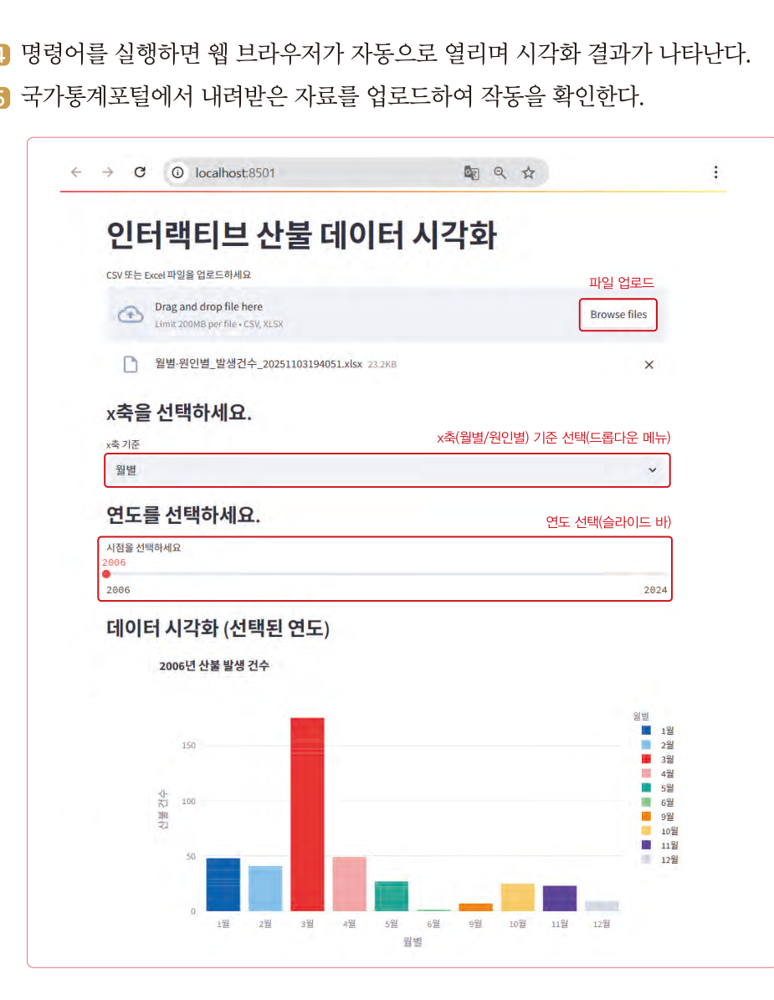
    <figcaption><b>교과서 73쪽</b> 스트림릿으로 만든 인터랙티브 산불 데이터 시각화 — 파일 업로드, x축 선택, 연도 슬라이더</figcaption></figure>
   <div class="grid g2">
    <div class="card"><h4>스트림릿 (streamlit)</h4><p>파이썬으로 데이터 분석 웹 앱을 쉽게 만들 수 있는 라이브러리. 복잡한 코딩 없이 데이터 시각화와 상호 작용 기능을 구현할 수 있고, <b>슬라이더나 드롭다운</b> 등의 위젯으로 사용자가 직접 데이터를 탐색할 수 있습니다.</p></div>
    <div class="card"><h4>배포 (deploy)</h4><p>만든 결과물을 인터넷을 통해 접속할 수 있도록 웹에 게시하는 것. <b>깃허브(GitHub)와 스트림릿 클라우드</b> 같은 서비스를 이용합니다.
    <br><span style="color:var(--dim)">11회차에 깃허브를 정식으로 배웁니다.</span></p></div>
   </div>`,
  pages:[{p:70,t:"인터랙티브 데이터 시각화"},{p:72,t:"인터랙티브 데이터 시각화 구현하기 — 스트림릿"},{p:73,t:"실행 화면 · 배포 · 주요 개념 정리하기"}]},
 {n:"02",h:"스트림릿 코드 살펴보기",
  lead:"오늘은 코드를 <b>직접 실행하기보다 읽고 이해하는 것</b>이 목표입니다. 어느 줄이 어떤 위젯을 만드는지 짚어 보세요.",
  html:`<figure class="fig">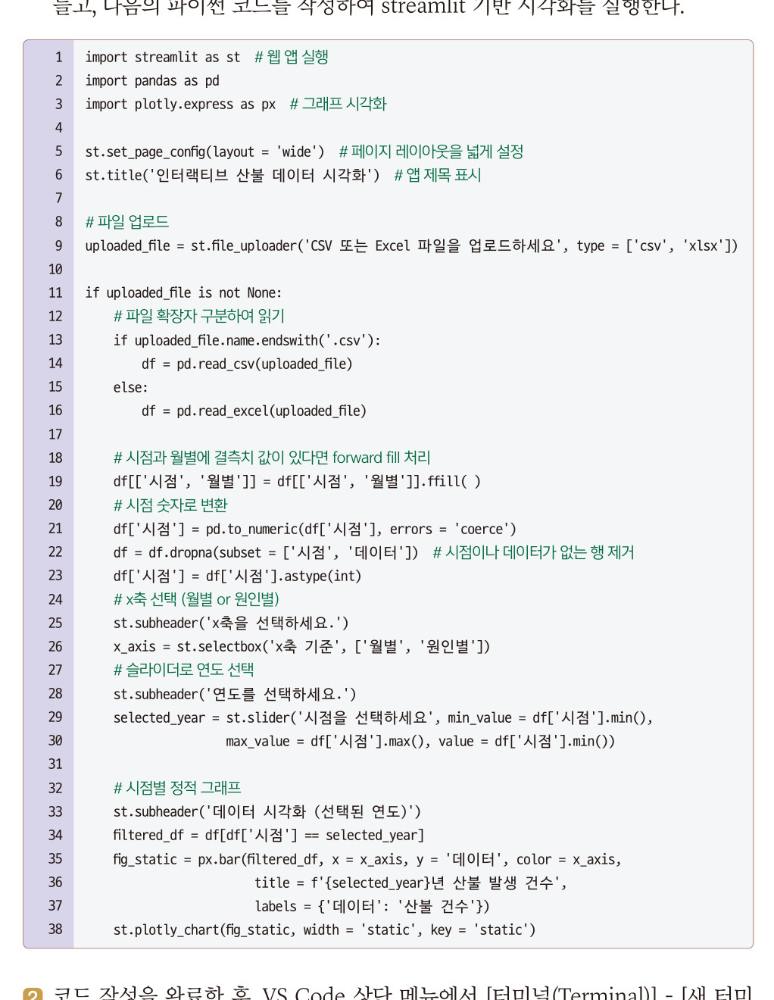
   <figcaption><b>교과서 72쪽</b> app.py — 스트림릿 기반 인터랙티브 시각화 코드</figcaption></figure>`,
  code:[{name:"핵심 부분만 — 위젯이 만들어지는 줄",src:`import streamlit as st        # 웹 앱 실행
import pandas as pd
import plotly.express as px    # 그래프 시각화

# 파일 업로드 위젯
uploaded_file = st.file_uploader('CSV 또는 Excel 파일을 업로드하세요', type = ['csv', 'xlsx'])

# 결측치 처리 — 오늘 배운 그 ffill
df[['시점', '월별']] = df[['시점', '월별']].ffill()
df['시점'] = df['시점'].astype(int)

# x축 선택 드롭다운
x_axis = st.selectbox('x축 기준', ['월별', '원인별'])

# 연도 선택 슬라이더
selected_year = st.slider('시점을 선택하세요', min_value = df['시점'].min(),
                          max_value = df['시점'].max(), value = df['시점'].min())`}],
  after:`<div class="box tip"><b>실행 명령</b> · 터미널에 <span style="font-family:var(--mono);color:var(--accent)">streamlit run app.py</span>를 입력하면
   웹 브라우저가 자동으로 열리며 시각화 결과가 나타납니다. (필요 라이브러리 · streamlit, plotly, openpyxl)</div>
   <div class="ask"><div class="ah">발문 · 코드 읽기</div>
   <ol>
    <li>화면의 <b>연도 슬라이더</b>를 만드는 것은 몇 번째 줄인가요?</li>
    <li>오늘 배운 <b>결측치 처리</b>가 이 코드 안에도 들어 있습니다. 어디인가요?</li>
    <li>이 앱에 기능을 하나 추가한다면 무엇을 넣겠습니까? <span style="color:var(--dim)">(교과서 73쪽 스스로 해결하기 예 · 산불 건수가 없는 월도 항상 표시되도록 개선한다)</span></li>
   </ol></div>`},
 {n:"03",h:"오늘의 과제 — 수면 시간 데이터 분석과 시각화",
  lead:"교과서 74쪽 역량 키우기 활동입니다. 산불에서 배운 절차를 <b>여러분의 문제</b>에 적용합니다.",
  html:`<figure class="fig">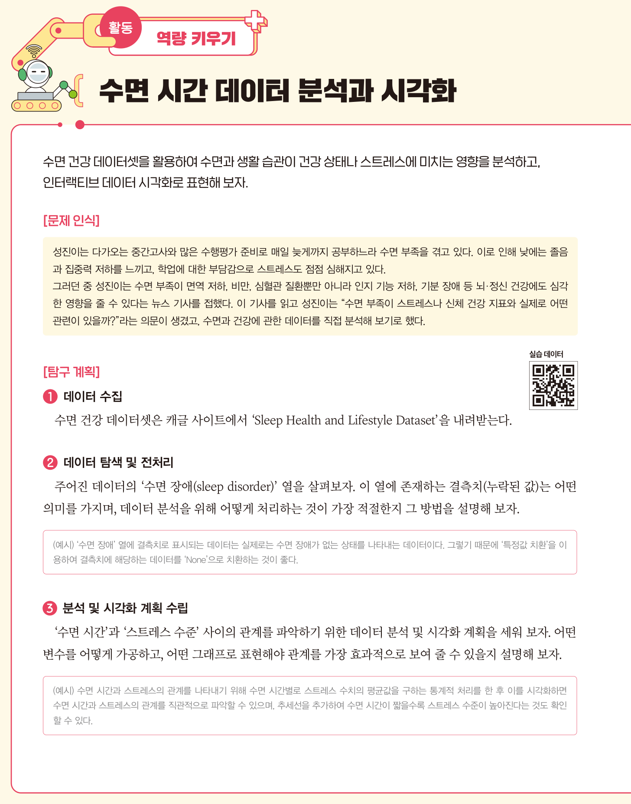
   <figcaption><b>교과서 74쪽</b> 역량 키우기 활동 — 수면 시간 데이터 분석과 시각화</figcaption></figure>
   <div class="box warn"><b class="t">문제 인식</b>
   성진이는 다가오는 중간고사와 많은 수행평가 준비로 매일 늦게까지 공부하느라 <b>수면 부족</b>을 겪고 있다.
   이로 인해 낮에는 졸음과 집중력 저하를 느끼고, 학업에 대한 부담감으로 스트레스도 점점 심해지고 있다.
   <br><br>그러던 중 성진이는 수면 부족이 면역 저하, 비만, 심혈관 질환뿐만 아니라 인지 기능 저하, 기분 장애 등 뇌·정신 건강에도 심각한 영향을 줄 수 있다는 뉴스 기사를 접했다.
   이 기사를 읽고 성진이는 <b>&ldquo;수면 부족이 스트레스나 신체 건강 지표와 실제로 어떤 관련이 있을까?&rdquo;</b>라는 의문이 생겼고, 수면과 건강에 관한 데이터를 직접 분석해 보기로 했다.</div>
   <div class="box tip"><b>남 이야기가 아닙니다</b> · 여러분 대부분이 성진이입니다. 이 분석은 <b>여러분 자신에 관한 분석</b>입니다.</div>
   <div class="box"><b>데이터</b> · 캐글(Kaggle)의 <b>Sleep Health and Lifestyle Dataset</b>을 내려받아 사용합니다. 교과서 74쪽 QR로도 접근할 수 있습니다.</div>
   <div class="reslist">
    <a class="res exp" href="https://www.kaggle.com/datasets" target="_blank" rel="noreferrer">
     <div class="rk">데이터 출처 · Kaggle</div><div class="rt">Sleep Health and Lifestyle Dataset</div>
     <div class="rd">캐글에서 데이터셋 이름으로 검색해 내려받으세요. 수면 시간, 수면의 질, 스트레스 수준, 활동량 등이 들어 있습니다.</div>
     <div class="ru">kaggle.com/datasets</div></a>
    <a class="res exp" href="https://colab.research.google.com" target="_blank" rel="noreferrer">
     <div class="rk">실습 환경 · Google</div><div class="rt">코랩 (Colab)</div>
     <div class="rd">설치 없이 브라우저에서 파이썬을 실행합니다. 노트북 링크를 제출하면 됩니다.</div>
     <div class="ru">colab.research.google.com</div></a>
   </div>`,
  pages:[{p:74,t:"역량 키우기 활동 — 수면 시간 데이터 분석과 시각화"}]}],
 worksheet:{title:"수면 시간 데이터 분석과 시각화 계획서",
  desc:"교과서 74쪽 활동을 옮긴 활동지입니다. 오늘은 <b>계획을 세우는 것</b>까지가 목표이며, 여유가 있으면 코랩에서 분석까지 진행해 링크를 남기세요.",
  fields:[
  {label:"1. 문제 인식 — 내가 확인하고 싶은 것",req:1,rows:3,hint:"성진이의 질문을 내 상황으로 바꿔 씁니다. 나 또는 내 주변에서 실제로 느끼는 문제여야 합니다.",ph:"예) 시험 기간에 수면 시간이 줄어들면 다음 날 집중력이 떨어진다고 느낀다. 수면 시간과 스트레스가 실제로 관계가 있는지 데이터로 확인하고 싶다."},
  {label:"2. 데이터 수집 — 어떤 데이터를 쓸 것인가",req:1,rows:2,hint:"데이터셋 이름과 그 안에 들어 있는 주요 열(변수)을 적습니다.",ph:"예) Kaggle의 Sleep Health and Lifestyle Dataset. 수면 시간, 수면의 질, 스트레스 수준, 신체 활동량, 직업, 나이 등의 열이 있다."},
  {label:"3. 데이터 탐색 및 전처리 — 결측치를 어떻게 처리할 것인가",req:1,rows:4,hint:"교과서 74쪽 ②번 활동입니다. '수면 장애(sleep disorder)' 열의 결측치가 <b>무엇을 의미하는지</b> 먼저 생각하고, 그에 맞는 처리 방법을 근거와 함께 씁니다.",ph:"예) '수면 장애' 열의 결측치는 실제로는 수면 장애가 없는 상태를 나타내는 데이터이다. 그러므로 삭제하거나 이전값으로 채우면 안 되고, '특정값 치환'으로 'None'으로 바꾸는 것이 좋다."},
  {label:"4. 분석 계획 — 어떤 변수를 어떻게 가공할 것인가",req:1,rows:3,hint:"교과서 74쪽 ③번 활동. 두 변수의 관계를 보려면 어떤 계산이 필요한지 적습니다.",ph:"예) 수면 시간별로 스트레스 수치의 평균값을 구하는 통계적 처리를 한 뒤 시각화한다."},
  {label:"5. 시각화 계획 — 어떤 그래프로 표현할 것인가",req:1,rows:3,hint:"강의 ③의 그래프 선택 표를 참고해, <b>왜 그 그래프여야 하는지</b> 근거를 씁니다.",ph:"예) 수면 시간과 스트레스의 관계를 직관적으로 보여야 하므로 산점도에 추세선을 추가한다. 추세선을 보면 수면 시간이 짧을수록 스트레스가 높아지는지 확인할 수 있다."},
  {label:"6. 사용한 프롬프트와 적용한 원칙",req:1,rows:4,hint:"AI에게 실제로 입력한 프롬프트를 그대로 적고, 오늘 배운 <b>5원칙·4기법 중 무엇을 적용했는지</b> 표시합니다.",ph:"[프롬프트] 당신은 데이터 분석 전문가입니다. 이 데이터프레임에는 수면 시간, 스트레스 수준 열이 있습니다. 수면 시간별 스트레스 평균을 구해 산점도와 추세선으로 시각화하는 코드를 단계별로 설명하며 작성해 주세요.\n[적용 원칙] ④ 역할 부여 + ③ 맥락 제공 + ② 단계별 요청(CoT)"},
  {label:"7. 인터랙티브로 만든다면 — 어떤 조작 기능을 넣을 것인가",rows:3,hint:"스트림릿의 슬라이더·드롭다운 중 무엇을 넣으면 보는 사람에게 도움이 될지 적습니다.",ph:"예) 나이대를 고르는 드롭다운과 직업군을 고르는 필터를 넣으면 '고등학생 또래'만 따로 볼 수 있다."},
  {label:"8. 예상 결과와 확인할 점",rows:3,hint:"분석 전 내 예상을 적어 두면, 결과가 예상과 다를 때 그 지점이 가장 흥미로운 발견이 됩니다.",ph:"예) 수면 시간이 짧을수록 스트레스가 높을 것이다. 그런데 너무 긴 수면도 스트레스와 관련이 있을지 궁금하다."},
  {label:"9. 코랩 노트북 링크 (진행했다면)",type:"text",hint:"공유 설정을 '링크가 있는 모든 사용자 - 뷰어'로 바꾼 뒤 주소를 붙여 넣으세요.",ph:"https://colab.research.google.com/drive/..."}]},
 rubric:{title:"활동지 채점 기준표 — 수면 시간 데이터 분석과 시각화 계획서",
  area:"영역 1 · 융합프로젝트를 위한 기술", areaPoints:30, when:"평가시기 8~9월 · 13~16차시",
  items:[
  {n:"문제 인식의 구체성",pt:5,
   hi:"확인하고 싶은 관계를 <b>두 변수로 특정</b>하고, 왜 그것이 자신에게 문제인지 경험과 함께 서술했다.",
   mid:"문제를 서술했으나 변수가 불분명하거나 일반론에 머문다.",
   lo:"교과서 예시를 옮겨 적었을 뿐 자기 문제가 없다."},
  {n:"결측치 처리의 타당성",pt:5,
   hi:"결측치가 <b>무엇을 의미하는지</b> 해석한 뒤 그에 맞는 처리 방법을 고르고 근거를 밝혔다.",
   mid:"처리 방법은 골랐으나 의미 해석 없이 기계적으로 적용했다.",
   lo:"결측치 처리 계획이 없거나 잘못된 방법을 골랐다."},
  {n:"분석·시각화 계획",pt:5,
   hi:"어떤 가공이 필요한지 밝히고, 그래프 선택에 <b>목적에 근거한 이유</b>를 붙였다.",
   mid:"계획은 있으나 그래프 선택 이유가 &lsquo;보기 좋아서&rsquo; 수준이다.",
   lo:"계획이 막연하다."},
  {n:"프롬프트 설계",pt:5,
   hi:"실제 사용한 프롬프트를 제시하고, <b>적용한 원칙·기법을 정확히 짚었으며</b> 결과에 따라 개선한 흔적이 있다.",
   mid:"프롬프트는 제시했으나 원칙 연결이 약하거나 한 번에 그쳤다.",
   lo:"프롬프트 로그가 없다."},
  {n:"인터랙티브 관점",pt:5,
   hi:"보는 사람이 <b>무엇을 탐색하고 싶어 할지</b>를 고려해 조작 기능을 제안했다.",
   mid:"기능을 나열했으나 이유가 없다.",
   lo:"내용이 없다."}],
  note:"이 활동지 <b>25점</b>은 영역 1(융합프로젝트를 위한 기술, 30점) 중 <b>7점</b>으로 환산합니다. (환산 점수 = 활동지 점수 ÷ 25 × 7, 소수 첫째 자리 반올림)<br><b>제출하지 않으면 0점</b>이며, 마감 후 1주 이내 재제출은 배점의 80%까지 인정합니다."},
 tail:`<div class="box task" style="margin-top:20px"><span class="tag b">제출</span>
  <b>제출물</b> · 계획서 1부 (구글 문서) + 코랩 노트북 링크(진행한 경우)<br>
  <b>문서 이름</b> · <span style="font-family:var(--mono)">4회차_수면 시간 데이터 분석과 시각화 계획서_학교명_이름</span><br>
  <b>제출 방법</b> · 활동지 아래 <b>[📄 구글 문서로 만들기]</b> → <b>Ctrl+V</b> → 문서 이름 변경 → 제출 폴더로 이동<br>
  <b>마감</b> · 오늘 수업 종료 시각(21:00)까지</div>`},

/* ============ 5. 토의 ============ */
{kind:"talk",nav:"토의",mins:30,title:"데이터는 무엇을 말하고, 무엇을 말하지 않는가",
 sub:"소회의실 15분 → 전체 공유 15분.",
 sections:[
 {n:"01",h:"진행 방식",
  html:`<div class="flow">
   <div class="fstep"><div class="n">0~2분</div><div class="t">소회의실 배정</div><div class="d">3인 1조 · 서로 다른 학교 학생끼리</div></div>
   <div class="fstep"><div class="n">2~12분</div><div class="t">계획 공유</div><div class="d">한 사람당 3분 — 내가 확인하려는 관계와 시각화 계획</div></div>
   <div class="fstep"><div class="n">12~15분</div><div class="t">논제 고르기</div><div class="d">아래 셋 중 하나로 조의 결론 만들기</div></div>
   <div class="fstep"><div class="n">15~30분</div><div class="t">전체 공유</div><div class="d">조별 1분 발표 + 교사 피드백</div></div>
  </div>`},
 {n:"02",h:"토의 논제",
  html:`<div class="box talk"><span class="tag g">논제 1 · 합계를 빼지 않았다면</span>
   <b>데이터가 틀렸을 때 AI는 틀린 것을 알까?</b><br>
   오늘 산불 데이터에서 &lsquo;계&rsquo;를 빼지 않았다면, AI는 <b>&ldquo;가장 큰 원인은 계입니다&rdquo;</b>라고 자신 있게 답했을 것입니다.
   AI는 왜 이것을 이상하다고 여기지 못했을까요? 우리가 AI를 쓸 때 <b>반드시 사람이 해야 하는 일</b>은 무엇일까요?</div>
  <div class="box talk" style="margin-top:12px"><span class="tag g">논제 2 · 상관과 인과</span>
   <b>&ldquo;수면 시간이 짧을수록 스트레스가 높다&rdquo;는 결과가 나왔다면, 잠을 더 자면 스트레스가 줄어드는가?</b><br>
   반대일 수도 있습니다. 스트레스가 높아서 잠을 못 자는 것일 수도 있죠. 셋째 원인이 둘 다를 만들었을 수도 있습니다.
   그렇다면 우리는 분석 결과를 <b>어떤 문장으로 써야</b> 정직한 것일까요? 우리 조의 문장을 하나 만들어 보세요.</div>
  <div class="box talk" style="margin-top:12px"><span class="tag g">논제 3 · &lsquo;기타&rsquo;가 2위라는 것</span>
   <b>산불 원인 2위가 &lsquo;기타&rsquo; 2,066건이었다.</b><br>
   이것은 데이터의 문제일까요, 분류 체계의 문제일까요? 만약 여러분이 산림청 담당자라면 이 결과를 보고 무엇을 하겠습니까?
   <span style="color:var(--dim)">데이터 분석의 결과가 곧 &lsquo;다음에 무엇을 측정할 것인가&rsquo;를 바꾸기도 합니다.</span></div>`}],
 worksheet:{title:"토의 기록",
  desc:"조에서 나온 이야기를 정리합니다. 이 기록도 수행평가 관찰 근거가 됩니다.",
  fields:[
  {label:"1. 우리 조가 고른 논제와 결론",rows:3,hint:"결론은 한 문장으로. 반대 의견이 있었다면 함께 적습니다."},
  {label:"2. 다른 사람의 분석 계획에서 배운 점",rows:3,hint:"누구의 어떤 계획이 좋았는지, 내 계획에 무엇을 보완할지."},
  {label:"3. 내 계획서에서 고칠 부분",rows:2,hint:"토의 뒤 실제로 고쳤다면 무엇을 고쳤는지 적습니다."}]}},

/* ============ 6. 정리 ============ */
{kind:"close",nav:"정리",mins:30,title:"개념 정리와 다음 시간",
 sections:[
 {n:"01",h:"주요 개념 정리하기",
  html:`<figure class="fig">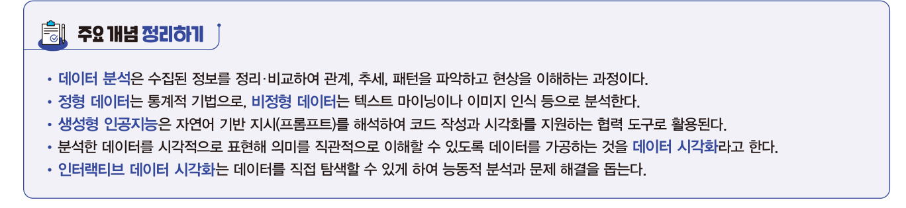
   <figcaption><b>교과서 73쪽</b> 주요 개념 정리하기</figcaption></figure>
   <div class="grid g3">
    <div class="card"><h4>데이터 분석</h4><p>수집된 정보를 정리·비교하여 관계, 추세, 패턴을 파악하고 현상을 이해하는 과정</p></div>
    <div class="card"><h4>정형 · 비정형</h4><p>정형은 통계 기법으로, 비정형은 텍스트 마이닝이나 이미지 인식으로 분석</p></div>
    <div class="card"><h4>생성형 인공지능</h4><p>자연어 기반 지시(프롬프트)를 해석하여 코드 작성과 시각화를 지원하는 <b>협력 도구</b></p></div>
    <div class="card"><h4>데이터 시각화</h4><p>분석한 데이터를 시각적으로 표현해 의미를 직관적으로 이해할 수 있도록 가공하는 것</p></div>
    <div class="card"><h4>인터랙티브 시각화</h4><p>데이터를 <b>직접 탐색할 수 있게</b> 하여 능동적 분석과 문제 해결을 도움</p></div>
    <div class="card"><h4>프롬프트 5원칙</h4><p>구체적 지시 · 명확한 단어 · 맥락 제공 · 구조 형식화 · 일관성 유지</p></div>
   </div>`,
  pages:[{p:73,t:"주요 개념 정리하기"}]},
 {n:"02",h:"오늘 남긴 것",
  html:`<div class="tw"><table style="min-width:520px">
   <thead><tr><th style="width:150px">산출물</th><th>내용</th><th style="width:150px">이후 쓰임</th></tr></thead>
   <tbody>
    <tr><td><b>계획서</b></td><td>수면 데이터 분석·시각화 계획 + 프롬프트 로그</td><td>영역 1 평가 7점</td></tr>
    <tr><td><b>산불 데이터 파일</b></td><td>국가통계포털에서 직접 내려받은 xlsx</td><td>프로젝트 데이터 확보 연습</td></tr>
    <tr><td><b>토의 기록</b></td><td>논제 결론, 배운 점, 고칠 부분</td><td>수행평가 관찰 기록 · 세특 근거</td></tr>
    <tr><td><b>프롬프트 원칙</b></td><td>5원칙 + 4기법</td><td><b>남은 8회차 내내</b> 사용</td></tr>
   </tbody></table></div>`},
 {n:"03",h:"다음 시간 예고 — 5회차 (9/28 월)",
  html:`<div class="box"><b>센서 데이터 수집과 피지컬 컴퓨팅</b> · 교과서 Ⅱ단원 2절
   <ul>
    <li>마이크로비트로 온도 · 소리 · 빛을 <b>직접 측정</b>하고 기록하기</li>
    <li>자동 데이터 기록 — 5초마다 스스로 재는 프로그램</li>
    <li>데이터 기반 문제 해결 — 교실 온도 모니터링, 낙상 감지</li>
   </ul>
   <b>준비물</b> · micro:bit v2(있는 경우) · USB 케이블 · 교과서 Ⅱ단원 2절<br>
   <b>미리 해 올 것</b> · 오늘 만든 <b>수면 데이터 분석 계획</b>을 실제로 코랩에서 한 번 돌려 보세요. 막힌 지점을 가져오면 함께 풉니다.</div>
   <div class="mini"><span><a href="index.html" style="color:var(--accent)">운영실 메인 →</a></span>
   <span><a href="lesson03.html" style="color:var(--accent)">← 3회차 다시 보기</a></span></div>`}],
 quiz:[
 {q:"생성형 인공지능을 이용할 때 좋은 결과물을 얻기 위한 프롬프트 엔지니어링 기법으로 옳은 것은?",
  opts:["프롬프트를 작성하는 목적만 간단히 적는다","모호한 단어를 써서 AI가 알아서 판단하게 한다","원하는 결과물의 형식과 맥락을 함께 구체적으로 제시한다","주제가 바뀌어도 같은 대화를 계속 이어간다"],
  a:2,why:"5가지 기본 원칙은 구체적 지시 · 명확한 단어 · <b>맥락 제공</b> · <b>구조 형식화</b> · 일관성 유지입니다. ④는 &lsquo;일관성 유지&rsquo; 원칙에 어긋납니다. 교과서 60쪽."},
 {q:"인터랙티브 데이터 시각화의 특징으로 옳은 것은?",
  opts:["만든 사람이 정한 한 장면만 보여 준다","사용자가 직접 데이터를 조작하며 탐색할 수 있다","이미지 파일로만 저장된다","통계 계산을 하지 않는다"],
  a:1,why:"인터랙티브 데이터 시각화는 데이터를 <b>직접 탐색할 수 있게</b> 하여 능동적 분석과 문제 해결을 돕습니다. 교과서 73쪽."},
 {q:"데이터 분석에서 결측치 처리가 필요한 이유로 가장 적절한 것은?",
  opts:["결측치가 있으면 데이터가 다양해져 분석 결과가 풍부해진다","결측치를 그대로 두면 계산 오류가 발생하거나 잘못된 분석 결과를 얻을 수 있다","결측치는 파일 용량을 늘린다","결측치는 그래프 색을 바꾼다"],
  a:1,why:"결측치를 그대로 두고 분석하면 계산 오류가 발생하거나 잘못된 결과를 얻을 수 있습니다. 교과서 63쪽."},
 {q:"오늘 수업에 비추어, 생성형 AI로 데이터를 분석할 때 <b>사람이 반드시 해야 하는 일</b>은?",
  opts:["코드를 한 줄씩 직접 타이핑하는 일","데이터가 분석에 적합한지 확인하고 결과가 타당한지 검증하는 일","AI에게 최대한 짧게 질문하는 일","그래프 색을 고르는 일"],
  a:1,why:"산불 데이터의 &lsquo;합계&rsquo;를 빼지 않으면 AI는 그것을 1위 원인으로 답합니다. AI는 <b>데이터가 이상한지 모릅니다.</b> 데이터의 적합성 판단과 결과 검증은 사람의 몫입니다."}]}
]};
</script>
<script src="config.js?v=8"></script>
<script src="app.js?v=8"></script>
<script>
boot();

/* ---------------- 프롬프트 고르기 실전 퀴즈 ---------------- */
(function(){
  const Q=[
   {s:"<b>① 구체적 지시</b> — 산불 엑셀 파일을 불러오게 하려면?",
    o:["월별·원인별 산불 발생 건수 파일을 불러오는 코드를 작성해 줘.",
       "판다스(Pandas)를 이용해서 엑셀 파일로 되어 있는 '월별·원인별 산불 발생 건수' 데이터를 불러오는 코드를 작성해 줘."],a:1,
    w:"어떤 <b>도구</b>로(판다스), 어떤 <b>형식</b>의 파일을(엑셀) 불러올지까지 밝혀야 합니다. 단어나 문장이 가리키는 작업을 <b>상세히 설명</b>하는 것이 ① 구체적 지시입니다."},
   {s:"<b>② 명확한 단어</b> — 연도별 합계를 구하게 하려면?",
    o:["시점(연도)을 기준으로 그룹화해서 산불 발생 건수의 합계를 계산해서 보여 주는 코드를 작성해 줘.",
       "시점별 산불 발생 건수를 계산해서 보여 주는 코드를 작성해 줘."],a:0,
    w:"&lsquo;시점별&rsquo;은 연도인지 월인지 모호합니다. <b>여러 의미로 해석될 수 있는 단어를 피하는</b> 것이 ② 명확한 단어입니다."},
   {s:"<b>③ 맥락 제공</b> — 데이터를 분석하게 하려면?",
    o:["월별·원인별 산불 발생 건수 데이터를 분석해 줘.",
       "이 데이터에는 시점(연도), 월별, 원인별, 데이터(산불 건수)에 관한 정보가 들어 있어. 이 데이터를 이용해서 연도별 산불 발생 건수가 증가하는 추세인지 확인할 수 있도록 연도별로 그룹화하여 합계를 계산하고, 그 결과를 표로 보여 주는 코드를 작성해 줘."],a:1,
    w:"데이터에 <b>어떤 열이 있는지</b>와 <b>무엇을 확인하려는지</b>를 함께 알려 줘야 합니다. 프롬프트를 작성하는 <b>이유와 목적</b>을 제시하는 것이 ③ 맥락 제공입니다."},
   {s:"<b>④ 구조 형식화</b> — 결과를 어떻게 받고 싶은지 알리려면?",
    o:["월별을 기준으로 그룹화해서 산불 발생 건수의 합계를 계산하고, 그 결과를 내림차순으로 정렬해서 표로 보여 주는 코드를 작성해 줘.",
       "월별로 산불 발생 건수를 합해서 출력하는 코드를 작성해 줘."],a:0,
    w:"<b>내림차순 정렬</b>, <b>표 형태</b>처럼 원하는 결과물의 형식이나 양식을 명확히 알려 주는 것이 ④ 구조 형식화입니다."},
   {s:"<b>⑤ 일관성 유지</b> — 산불 분석 대화를 이어갈 때 옳은 것은?",
    o:["&ldquo;산불 데이터 분석 코드 만들어 줘.&rdquo; (이어서) &ldquo;그런데 파이썬 설치는 어떻게 해?&rdquo;",
       "&ldquo;산불 데이터 분석 코드 만들어 줘.&rdquo; (이어서) &ldquo;이 코드에서 월별 합계를 시각화하려면 어떻게 수정하면 돼?&rdquo;"],a:1,
    w:"동일 주제는 <b>한 대화 내에서 이어가고</b>, 주제가 바뀌면 새 대화를 시작합니다. 설치 문의는 다른 주제이므로 새 대화로 여는 것이 좋습니다."}];
  document.getElementById("pq").innerHTML=Q.map((q,i)=>
   `<div class="nq" data-pq="${i}"><div class="s">${q.s}</div>
     <div class="opts2" style="flex-direction:column;align-items:stretch">
      ${q.o.map((t,j)=>`<button style="text-align:left;line-height:1.6" onclick="pqPick(${i},${j})">${t}</button>`).join("")}</div>
     <div class="fb">${q.w}</div></div>`).join("");
  window.__PQ=Q;
})();
function pqPick(i,j){
  const Q=window.__PQ, root=document.querySelector(`.nq[data-pq="${i}"]`);
  if(root.dataset.done)return; root.dataset.done="1";
  root.querySelectorAll(".opts2 button").forEach((b,k)=>{
    if(k===Q[i].a)b.classList.add("ok"); else if(k===j)b.classList.add("no");
  });
  root.querySelector(".fb").classList.add("on");
}
</script>
</body></html>
